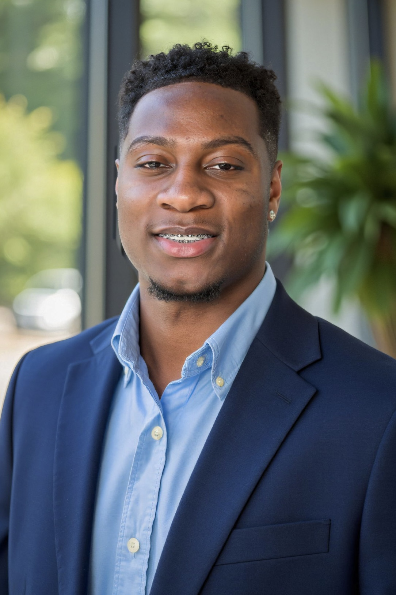

Software Engineer | Product Builder
Nevyn Brown
Software engineer focused on building useful products, learning through entrepreneurship, and turning ambitious ideas into real systems.
I am a software engineer passionate about building technology that solves real-world problems. I am currently a Software Engineer Intern at Bank of America while also building FundU, a platform reimagining fundraising by helping organizations raise money through everyday purchases instead of traditional donation asks.